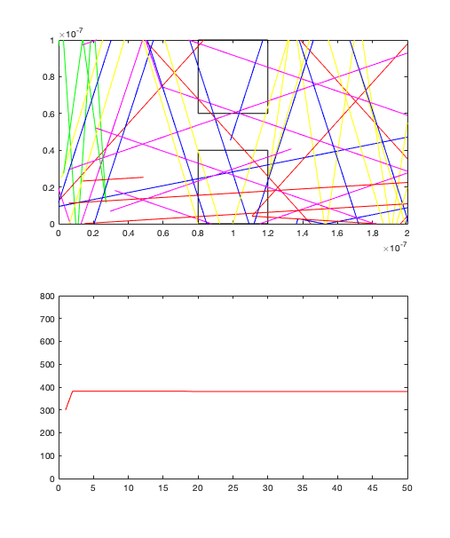
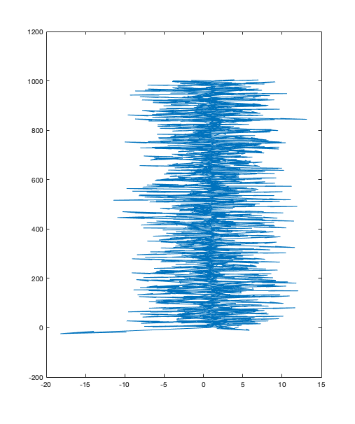

clearvars
clearvars -GLOBAL
close all
set(0,'DefaultFigureWindowStyle', 'docked')
global C
global Em T
global BoundX BoundY
global Pxp Px Pyp Py Vx Vy
global Vtherm
global nElectrons
global t_mn
C.q_0 = 1.60217653e-19;
C.hb = 1.054571596e-34;
C.h = C.hb * 2 * pi;
C.m_0 = 9.10938215e-31;
C.kb = 1.3806504e-23;
C.eps_0 = 8.854187817e-12;
C.mu_0 = 1.2566370614e-6;
C.c = 299792458;
C.g = 9.80665;
Em = 0.26 * C.m_0;
BoundX = 200e-9;
BoundY = 100e-9;
T = 300;
t_mn = 0.2e-11;
TimeSteps = 50;
nElectrons = 1000;
dt = 1e-13;
Box1Bnd1x = 0.8e-7;
Box1Bnd1y = 1e-7;
Box1Bnd2x = 1.2e-7;
Box1Bnd2y = 1e-7;
Box1Bnd3x = 1.2e-7;
Box1Bnd3y = 0.6e-7;
Box1Bnd4x = 0.8e-7;
Box1Bnd4y = 0.6e-7;
Box2Bnd1x = 0.8e-7;
Box2Bnd1y = 0.4e-7;
Box2Bnd2x = 1.2e-7;
Box2Bnd2y = 0.4e-7;
Box2Bnd3x = 1.2e-7;
Box2Bnd3y = 0;
Box2Bnd4x = 0.8e-7;
Box2Bnd4y = 0;
subplot(2,1,1);
myBoxes(Box1Bnd1x, Box1Bnd1y, Box1Bnd2x, Box1Bnd2y, Box1Bnd3x, Box1Bnd3y, Box1Bnd4x, Box1Bnd4y);
myBoxes(Box2Bnd1x, Box2Bnd1y, Box2Bnd2x, Box2Bnd2y, Box2Bnd3x, Box2Bnd3y, Box2Bnd4x, Box2Bnd4y);
hold on
x = randi(nElectrons,1);
Pxp(1: x) = ((Box2Bnd4x - 0).*rand(x, 1))* BoundX;
Pxp(x+1: nElectrons) = ((BoundX - Box2Bnd3x).*rand(nElectrons - x, 1) + Box2Bnd3x )* BoundX;
Pyp(1: nElectrons) = rand(nElectrons, 1) * BoundY;
Vtherm = sqrt(2 * C.kb * T/Em);
Vx(1: nElectrons) = randn(nElectrons, 1) * Vtherm;
Vy(1: nElectrons) = randn(nElectrons, 1) * Vtherm;
Px(1: nElectrons) = Pxp(1: nElectrons) + (Vx .* dt);
Py(1: nElectrons) = Pyp(1: nElectrons) + (Vy .* dt);
myColors = ['r' 'b' 'g' 'y' 'm' ];
myColorTyp = 1;
Pscat = 1 - exp(-(dt/t_mn));
a = randi(nElectrons,5,1);
TAvgp = 300;
for i=2:TimeSteps
if(Pscat > rand())
Vx(1: nElectrons) = randn(nElectrons, 1) * Vtherm;
Vy(1: nElectrons) = randn(nElectrons, 1) * Vtherm;
end
Vy((Py>BoundY) | (Py<0)) = -Vy((Py>BoundY) | (Py<0));
for j=1:5
subplot(2,1,1);
plot([Pxp(a(j)) Px(a(j))], [Pyp(a(j)) Py(a(j))],myColors(j));
xlim([0 BoundX]);
ylim([0 BoundY]);
end
pause(0.1)
hold on
VxAvg = mean(abs(Vx));
VyAvg = mean(abs(Vy));
TAvg = (((VxAvg^2)+ (VyAvg^2)) * Em)/(2 * C.kb);
subplot(2,1,2);
plot([i-1 i],[TAvgp TAvg],'r');
xlim([0 TimeSteps]);
ylim([0 800]);
pause(0.1)
hold on
Px(Px>BoundX) = Px(Px>BoundX)-BoundX;
Px(Px<0) = BoundX;
Pxp = Px;
Pyp = Py;
TAvgp = TAvg;
Px(1: nElectrons) = Pxp(1: nElectrons) + (Vx .* dt);
Py(1: nElectrons) = Pyp(1: nElectrons) + (Vy .* dt);
end
Ex = gradient(Px);
Ey = gradient(Py);
figure
quiver(-Ey',-Ex',1);
 